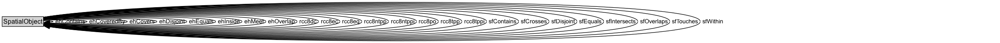

SpatialObject¶
Anything spatial (being or having a shape, position or an extent).
NOTE: Subclasses of this class are expected to be used for instance data.
Diagram¶

Specializations of SpatialObject¶
| Class | Description |
|---|---|
| Feature | A discrete spatial phenomenon in a universe of discourse. |
| Geometry | A coherent set of direct positions in space. The positions are held within a Spatial Reference System (SRS). |
Formalization for SpatialObject¶
| Property | Constraint |
|---|---|
| ehContains | only SpatialObject |
| ehCoveredBy | only SpatialObject |
| ehCovers | only SpatialObject |
| ehDisjoint | only SpatialObject |
| ehEquals | only SpatialObject |
| ehInside | only SpatialObject |
| ehMeet | only SpatialObject |
| ehOverlap | only SpatialObject |
| hasMetricArea | datatype xsd:double |
| hasMetricLength | datatype xsd:double |
| hasMetricPerimeterLength | datatype xsd:double |
| hasMetricSize | datatype xsd:double |
| hasMetricVolume | datatype xsd:double |
| rcc8dc | only SpatialObject |
| rcc8ec | only SpatialObject |
| rcc8eq | only SpatialObject |
| rcc8ntpp | only SpatialObject |
| rcc8ntppi | only SpatialObject |
| rcc8po | only SpatialObject |
| rcc8tpp | only SpatialObject |
| rcc8tppi | only SpatialObject |
| sfContains | only SpatialObject |
| sfCrosses | only SpatialObject |
| sfDisjoint | only SpatialObject |
| sfEquals | only SpatialObject |
| sfIntersects | only SpatialObject |
| sfOverlaps | only SpatialObject |
| sfTouches | only SpatialObject |
| sfWithin | only SpatialObject |
Used by classes¶
| Class | Property |
|---|---|
| Spatial Object Collection (rdfs) | rdfs:member |